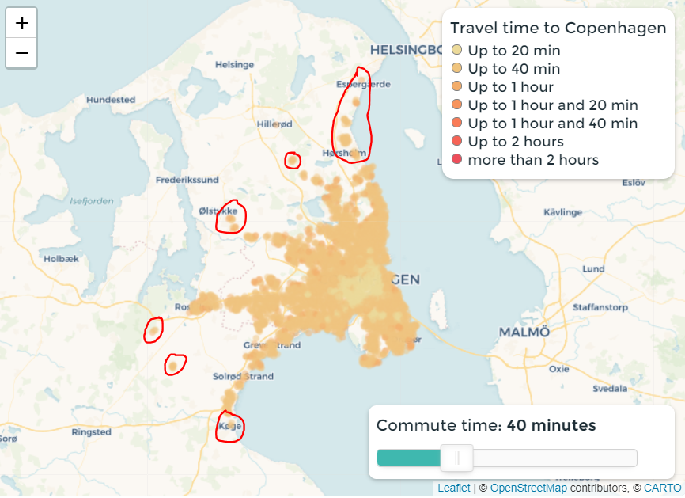
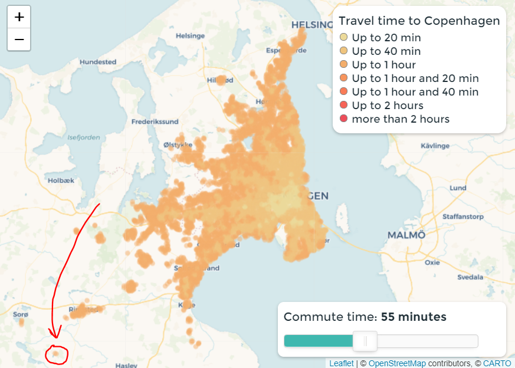
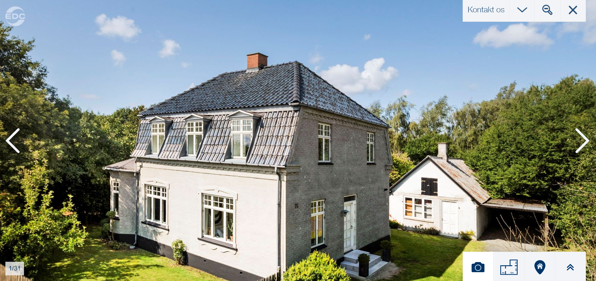

How long will it take to travel to Copenhagen with public transportation?
My girlfriend and i have been looking at houses within reasonable distance of Copenhagen. One question that kept popping up was the following: How far from Copenhagen can I live but still have a short commute.
So I made a map that shows the time it takes to arrive at Hovedbanegården at 9:00 am monday morning with public transportation. This is shown using the color of the point. Darker colors corresponds to a longer travel time.
Travel time to Copenhagen
- Up to 20 min
- Up to 40 min
- Up to 1 hour
- Up to 1 hour and 20 min
- Up to 1 hour and 40 min
- Up to 2 hours
- more than 2 hours
House prices
This map shows the averaged house prices of
standalone houses sold in 2018 and 2019.
The blue dots are the same as shown on the map above. They
simply show how far you can reach within
the
set commute time
💡🕵️ If you want a cheap house, look for
the lighter colored areas with
blue dots inside
of them.
Averaged house prices
- 0 - 1.5 million
- 1.5 - 3 million
- 3 - 4.5 million
- 4.5 - 6 million
- More than 6 million
- Reachable points
Analysis
Putting the slider to 40 minutes shows some interesting cities like Køge, Viby, Lejre, Ølstykke, Lillerød, Espergærde and Humlebæk. If you are looking for cheap houses with a small commute then Viby, Ølstykke and Lillerød seem relevant. Its also interesting how far you can get within 40 minutes of travelling.
Changing the commute time to 55 minutes will show a quite interesting city called Glumsø.
Its a city 50 minutes from Copenhagen, close to nature and you can get magnificent houses like the one below for 1.995.000 kr. YES thats under 2 million 😲 (technically at least)
There are probably lots more to explore with the map, but these were just some highlights i found.
Outro
As a next step it would be awesome to do the exact same thing with house prices. Could be interesting to have areas with low commute time and low average houseprices.
If you have any comments, please write to me here: benjamin.dals.hughes@gmail.com
Made by Benjamin Hughes
Idea by Benjamin Hughes and Anders Munk Nielsen
I am not paid by anyone to do this (though i wish i were)